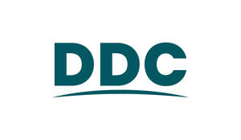

Trade Mark Journal No.2025/015 11 April 2025
UK00004179743 26 March 2025 (1,3,5,6,7,9,11,16,17,19,20,21,35,37,42)
Mark 1

Mark 2
- Class 1
- Scale and limescale inhibitors; antimicrobial agents for use in manufacture; chemicals and agents having antimicrobial properties (other than medical or veterinary); antimicrobial preservatives for sterilization and disinfection; antimicrobial chemicals; antimicrobial agents impregnated into unprocessed plastics; antimicrobial impregnants for exterior surfaces of sluice room and sanitary apparatus and instruments.
- Class 3
- Cleaning preparations for sluice rooms, sluice room slophoppers, disposal hoppers, sluice (sterilizers), manual sluices (sterilizers) and sluice room storage cupboards; non-medicated cosmetics and toiletry preparations; Cleaning, polishing, scouring and abrasive preparations; Toiletries; Body cleaning and beauty care preparations; Skin, eye and nail care preparation; Soaps and gels; Non-medicated soaps; Soaps for household use; Soaps in liquid form; Soaps in gel form; Hand soaps; Facial soaps; Paper soaps for personal uses; Sponges impregnated with soaps; Cloths impregnated with a skin cleanser; Bath preparations; Bath soaps; Cleaning and fragrancing preparations; Detergents; Detergents other than for use in manufacturing operations and for medical purposes; Household detergents; Laundry detergents; Dishwasher detergents; Cloths impregnated with a detergent for cleaning; Polish; Abrasives; Metal polish; Impregnated cloths for polishing; Laundry preparations; Wipes impregnated with a cleaning preparation; Moist wipes impregnated with a cosmetic lotion; Fragrance impregnated disposable wipes; Moist wipes for sanitary and cosmetic purposes; Wipes impregnated with a skin cleanser; Face wipes; Baby wipes; Pre-moistened cosmetic wipes; Pre-moistened cosmetic towelettes; Baby wipes impregnated with cleaning preparations; Cotton wool in the form of wipes for cosmetic use; Disposable wipes impregnated with cleansing compounds for use on the face; Facial wipes impregnated with cosmetics; Face masks.
- Class 5
- Anti-microbial preparations; sanitary and antimicrobial preparations for medical purposes; chemicals having antimicrobial properties (medical or veterinary); chemical substances for disinfecting and sterilising sluice rooms, sluice room appliances and apparatus, slophoppers, disposal hoppers, sluices (sterilizers), macerators and sluice room furniture; antimicrobial additives for preserving silage against clostridia infection; microbial growth inhibitors; preparations for combating attack by microbial pests; disinfectant and antimicrobial solutions for use on surfaces, in wiping surfaces and on apparatus and appliances; anti-microbial preparations for impregnation into lids and plastic lids; disinfectant solutions containing antimicrobial preparations for use in cleaning and wiping surfaces; preparations and agents for sterilization, disinfection and for cleaning and protecting surfaces; sluicer disinfecting preparation.
- Class 6
- Hose connections, couplings and fittings [of metal], joint connectors for pipes, metal fixing apparatus for sanitary installation and small items of stainless steel hardware for use in sluicerooms, sluices, sluicer disinfectors, slophoppers, disposal hoppers, incontinence pad and nappy and biodegradable material macerators for clinical waste, and disinfectors; waste traps; parts and fittings for all the aforesaid goods.
- Class 7
- Machines and apparatus, all for the disposal of waste products and/or sewage; grinding, macerating, pulverising and pulping machines; macerators, apparatus for reducing, softening or separating solids; machines for the disposal of waste products and sewage, including machines for disposing of such matter from articles such as bed pans and disposing of articles such as single use bedpans; macerators for incontinence pads, nappies, bedpans, biodegradable material and clinical waste; apparatus for the maceration of medical and surgical materials; bag sealing machines; parts and fittings for all the aforesaid goods.
- Class 9
- Electronic control apparatus, for use in sluice rooms, sluice room slophoppers, disposable hoppers, sluices (sterilizers) and manual sluices (sterilizers); electronic weighing scales.
- Class 11
- Apparatus for water supply and sanitary purposes; disinfecting apparatus; sanitary ware, apparatus, units and installations; sluiceroom slophoppers, disposal hoppers, sluices (sterilizers), manual sluices (sterilizers); electrical appliances for sanitary purposes; sluicer disinfectors; bed pan washer disinfectors; air purifiers; air sterilisers; industrial air sterilisers and purifiers; filters for air sterilisers and purifiers; water trap disinfectors; apparatus for sanitising water in sink and wash basin waste pipes and water traps; water treatment apparatus; waste water purification units; disinfecting apparatus for use with water traps; metal sinks; metal basins; taps; parts and fittings for all the aforesaid goods; stainless steel sanitary ware; sluices (sanitary installations); sluices (sanitary installations) for use in hospitals; sluices (sterilizers); sluices (sterilizers) for use in hospitals; babies' baths (parts of sanitary installations); bathroom basins (parts of sanitary installations); sanitary ware [other than furniture]; bathroom installations for sanitary purposes; cast iron parts for pipes (parts of sanitary installations); clean chambers (sanitary installations); devices to treat water to prevent deposits in sanitary installations; electrical installations for sanitary purposes; filters for sanitary water distribution apparatus; fittings for sanitary purposes; installations for sanitary purposes; sanitary apparatus made from plastics materials; sanitary drain armatures and sinks; sanitary drain armatures for basins; sanitary drain armatures for baths; stainless steel sinks; hot water bottles; electrical sluiceroom appliances; electrical sluiceroom appliances and macerators; apparatus for the desinfection of medical and surgical materials; apparatus for lighting; lamps; UVC lamps; UVC lamp towers; apparatus for sanitising and hermetically sealing dirty waste bags; parts and fittings for all the aforesaid goods.
- Class 16
- Disposable napkins; Paper wipes; Cellulose wipes; Disposable paper wipes; Paper wipes for cleaning; plastic waste bags; plastic bags for disposal of waste; plastic bags for disposal of waste in hospitals; parts and fittings for all the aforementioned goods.
- Class 17
- Hose connectors (non-metallic) (parts of sanitary installations); hose couplings (non-metallic) (parts of sanitary installations); hose fittings (non-metallic) (parts of sanitary installations); joint connectors (non-metallic) for pipes being parts of sanitary installations; joints for pipes (non-metallic) (parts of sanitary installations); joints for tubes (non-metallic) (parts of sanitary installations); pipe connections (Non-metallic) (parts of sanitary installations); pipe couplings (non- metallic) (parts of sanitary installations); pipe extensions (non-metallic) (parts of sanitary installations); pipe fittings (junctions) (non-metallic) (parts of sanitary installations).
- Class 19
- Sluices (channels), not of metal; sluices (drains) not of metal.
- Class 20
- Sluiceroom furniture, including, sluiceroom storage cupboards and work surfaces; sluice room furniture for the encasing of sluice room slophoppers, disposal hoppers and manual sluices (sterilizers); combined lids for containers [non-metallic and not for household or kitchen use]; combined lids [non-metallic and not for household or kitchen use] impregnated with antimicrobial preparations and agents; the aforesaid for use with sanitary furniture, surfaces and machines; stainless steel furniture; stainless steel base units and wall units; stainless steel janitorial units; metal shelves; metal wall racks; combined lids impregnated with antimicrobial preparations and agents for use with machines, including, sluice room washing and disinfecting apparatus, slophoppers, disposal hoppers, sluices (sterilizers), disinfectant apparatus, macerating (pulverizing machines); furniture for sanitary purposes; furniture for the encasing of sanitary apparatus; parts and fittings for all the aforesaid.
- Class 21
- Sluiceroom disposal bins and sluice room stainless steel bowls and buckets, being for use in sluice rooms, and for use with sluice room slophoppers, disposal hoppers, sluices (sterilizers), manual sluices (sterilizers); soap dispensers; paper towel dispensers; glove dispensers; pedal bins; industrial packaging containers of glass and porcelain.
- Class 35
- Retail, online retail and wholesale services connected with scale and limescale inhibitors, antimicrobial agents for use in manufacture, chemicals and agents having antimicrobial properties (other than medical or veterinary), antimicrobial preservatives for sterilization and disinfection, antimicrobial chemicals, antimicrobial agents impregnated into unprocessed plastics, antimicrobial impregnants for exterior surfaces of sluice room and sanitary apparatus and instruments, cleaning preparations for sluice rooms, sluice room slophoppers, disposal hoppers, sluice (sterilizers), manual sluices (sterilizers) and sluice room storage cupboards, non-medicated cosmetics and toiletry preparations, cleaning, polishing, scouring and abrasive preparations, toiletries, body cleaning and beauty care preparations, skin, eye and nail care preparation, soaps and gels, non-medicated soaps, soaps for household use, soaps in liquid form, soaps in gel form, hand soaps, facial soaps, paper soaps for personal uses, sponges impregnated with soaps, cloths impregnated with a skin cleanser, bath preparations, bath soaps, cleaning and fragrancing preparations, detergents, detergents other than for use in manufacturing operations and for medical purposes, household detergents, laundry detergents, dishwasher detergents, cloths impregnated with a detergent for cleaning, polish, abrasives, metal polish, impregnated cloths for polishing, laundry preparations, wipes impregnated with a cleaning preparation, moist wipes impregnated with a cosmetic lotion, fragrance impregnated disposable wipes, moist wipes for sanitary and cosmetic purposes, wipes impregnated with a skin cleanser, face wipes, baby wipes, pre-moistened cosmetic wipes, pre-moistened cosmetic towelettes, baby wipes impregnated with cleaning preparations, cotton wool in the form of wipes for cosmetic use, disposable wipes impregnated with cleansing compounds for use on the face, facial wipes impregnated with cosmetics, face masks, anti-microbial preparations, sanitary and antimicrobial preparations for medical purposes, chemicals having antimicrobial properties (medical or veterinary), chemical substances for disinfecting and sterilising sluice rooms, sluice room appliances and apparatus, slophoppers, disposal hoppers, sluices (sterilizers), macerators and sluice room furniture, antimicrobial additives for preserving silage against clostridia infection, microbial growth inhibitors, preparations for combating attack by microbial pests, disinfectant and antimicrobial solutions for use on surfaces, in wiping surfaces and on apparatus and appliances, anti-microbial preparations for impregnation into lids and plastic lids, disinfectant solutions containing antimicrobial preparations for use in cleaning and wiping surfaces, preparations and agents for sterilization, disinfection and for cleaning and protecting surfaces, sluicer disinfecting preparation, hose connections, couplings and fittings [of metal], joint connectors for pipes, metal fixing apparatus for sanitary installation and small items of stainless steel hardware for use in sluicerooms, sluices, sluicer disinfectors, slophoppers, disposal hoppers, incontinence pad and nappy and biodegradable material macerators for clinical waste, and disinfectors, waste traps, parts and fittings for all the aforesaid goods, machines and apparatus, all for the disposal of waste products and/or sewage, grinding, macerating, pulverising and pulping machines, macerators, apparatus for reducing, softening or separating solids, machines for the disposal of waste products and sewage, including machines for disposing of such matter from articles such as bed pans and disposing of articles such as single use bedpans, macerators for incontinence pads, nappies, bedpans, biodegradable material and clinical waste, apparatus for the maceration of medical and surgical materials, bag sealing machines, parts and fittings for all the aforesaid goods, electronic control apparatus, for use in sluice rooms, sluice room slophoppers, disposable hoppers, sluices (sterilizers) and manual sluices (sterilizers), electronic weighing scales, apparatus for water supply and sanitary purposes, disinfecting apparatus, sanitary ware, apparatus, units and installations, sluiceroom slophoppers, disposal hoppers, sluices (sterilizers), manual sluices (sterilizers), electrical appliances for sanitary purposes, sluicer disinfectors, bed pan washer disinfectors, air purifiers, air sterilisers, industrial air sterilisers and purifiers, filters for air sterilisers and purifiers, water trap disinfectors, apparatus for sanitising water in sink and wash basin waste pipes and water traps, water treatment apparatus, waste water purification units, disinfecting apparatus for use with water traps, metal sinks, metal basins, taps, parts and fittings for all the aforesaid goods, stainless steel sanitary ware, sluices (sanitary installations), sluices (sanitary installations) for use in hospitals, sluices (sterilizers), sluices (sterilizers) for use in hospitals, babies' baths (parts of sanitary installations), bathroom basins (parts of sanitary installations), sanitary ware [other than furniture], bathroom installations for sanitary purposes, cast iron parts for pipes (parts of sanitary installations), clean chambers (sanitary installations), devices to treat water to prevent deposits in sanitary installations, electrical installations for sanitary purposes, filters for sanitary water distribution apparatus, fittings for sanitary purposes, installations for sanitary purposes, sanitary apparatus made from plastics materials, sanitary drain armatures and sinks, sanitary drain armatures for basins, sanitary drain armatures for baths, stainless steel sinks, hot water bottles, electrical sluiceroom appliances, electrical sluiceroom appliances and macerators, apparatus for the desinfection of medical and surgical materials, apparatus for lighting, lamps, uvc lamps, uvc lamp towers, apparatus for sanitising and hermetically sealing dirty waste bags, parts and fittings for all the aforesaid goods, disposable napkins, paper wipes, cellulose wipes, disposable paper wipes, paper wipes for cleaning, plastic waste bags, plastic bags for disposal of waste, plastic bags for disposal of waste in hospitals, parts and fittings for all the aforementioned goods, hose connectors (non-metallic) (parts of sanitary installations), hose couplings (non-metallic) (parts of sanitary installations), hose fittings (non-metallic) (parts of sanitary installations), joint connectors (non-metallic) for pipes being parts of sanitary installations, joints for pipes (non-metallic) (parts of sanitary installations), joints for tubes (non-metallic) (parts of sanitary installations), pipe connections (non-metallic) (parts of sanitary installations), pipe couplings (non- metallic) (parts of sanitary installations), pipe extensions (non-metallic) (parts of sanitary installations), pipe fittings (junctions) (non-metallic) (parts of sanitary installations), sluices (channels), not of metal, sluices (drains) not of metal, sluiceroom furniture, including, sluiceroom storage cupboards and work surfaces, sluice room furniture for the encasing of sluice room slophoppers, disposal hoppers and manual sluices (sterilizers), combined lids for containers [non-metallic and not for household or kitchen use], combined lids [non-metallic and not for household or kitchen use] impregnated with antimicrobial preparations and agents, the aforesaid for use with sanitary furniture, surfaces and machines, stainless steel furniture, stainless steel base units and wall units, stainless steel janitorial units, metal shelves, metal wall racks, combined lids impregnated with antimicrobial preparations and agents for use with machines, including, sluice room washing and disinfecting apparatus, slophoppers, disposal hoppers, sluices (sterilizers), disinfectant apparatus, macerating (pulverizing machines), furniture for sanitary purposes, furniture for the encasing of sanitary apparatus, parts and fittings for all the aforesaid, sluiceroom disposal bins and sluice room stainless steel bowls and buckets, being for use in sluice rooms, and for use with sluice room slophoppers, disposal hoppers, sluices (sterilizers), manual sluices (sterilizers), soap dispensers, paper towel dispensers, glove dispensers, pedal bins, industrial packaging containers of glass and porcelain.
- Class 37
- Cleaning, installation, construction, maintenance, repair, service and validation of sluice rooms, sluice room slophoppers, disposable hoppers, sluices (sterilizers), manual sluices (sterilizers), sluiceroom storage cupboards, electronic and electrical sluice room appliances, sluicer disinfectors; Cleaning, installation, construction, maintenance, repair, service and validation of incontinence pad, nappy, and biodegradable material macerators, and macerators for clinical waste.
- Class 42
- Scientific research and design services relating to the installation, design and manufacture of sluicerooms, sluiceroom slophoppers, disposable hoppers, sluices (sterilizers), manual sluices (sterilizers), sluiceroom storage cupboards, electrical and electronic sluiceroom appliances, sluicer disinfectors; Scientific research and design services relating to the installation, design and manufacture of incontinence pad, nappy and biodegradable material macerators and macerators for clinical waste.
DDC Dolphin Limited
Representative: Murgitroyd & Company